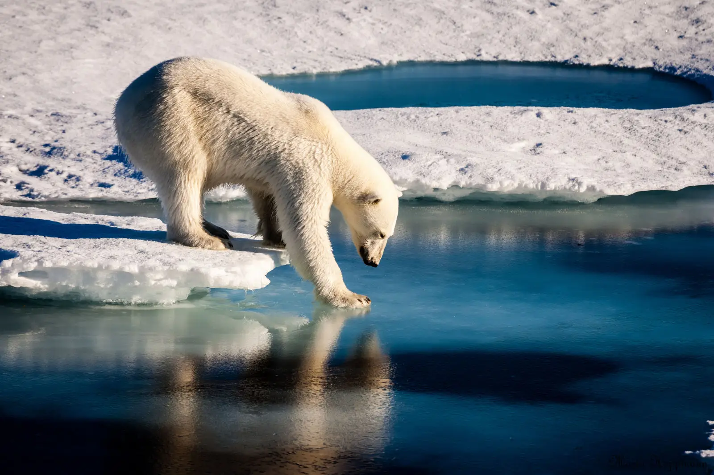

Ареал проживання
Білий ведмідь має циркумполярний ареал: трапляється навколо Північного Льодовитого океану, на морській кризі та арктичних узбережжях. Найважливішими для нього є місця, де є крига, ополонки і доступ до тюленів.
Північна Америка, Європа, Азія.
Канада, Норвегія, Росія, Сполучені Штати Америки, а також території Гренландії.
- Острів Врангеля та західна Аляска;
- Північна Аляска;
- Канадський Арктичний архіпелаг;
- Ґренландія;
- Земля Франца-Йосифа — Шпіцберген;
- узбережжя півострова Таймир.
Тундра, узбережжя, морські й льодовикові зони. Основний кліматичний пояс — полярний.
